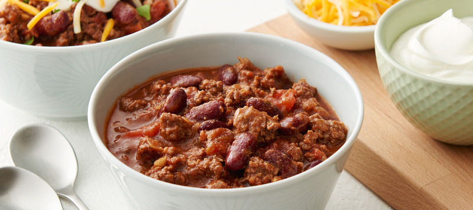

Cole’s Chili
 6
servings
6
servings 45
minutes
45
minutes-
 Cole
Goins
Cole
Goins
 Vegetarian
Vegetarian
A hearty chili - no meat needed.

2 tbspolive oil½yellow onion, diced3 clovesgarlic, minced28 oz1 large can crused or diced tomatoes30 oz2 cans of beans, drained - black and kidney15 oz1 can corn½ packagespinach3 tbspchili powder3 tspcumin½ tspcayenne pepper1 tspsalt½ tspground pepper1 tbspItalian spices1-2 cupsvegetable stock
Ingredients
2 tbspolive oil½yellow onion, diced3 clovesgarlic, minced
Heat olive oil over medium-high in a large pot or saucepan. Add onions and garlic and saute until translucent, about
3 minutes.
28 oz1 large can crused or diced tomatoes30 oz2 cans of beans, drained - black and kidney15 oz1 can corn
Add tomatoes, beans, and corn. Bring to a boil.
3 tbspchili powder3 tspcumin½ tspcayenne pepper1 tspsalt½ tspground pepper1 tbspItalian spices1-2 cupsvegetable stock½ packagespinach
Add chili powder, cumin, cayenne pepper, Italian spices, salt, and pepper, and water or stock. Stir well. Turn heat down and simmer for about 30 minutes, mixing in the spinach toward the end.